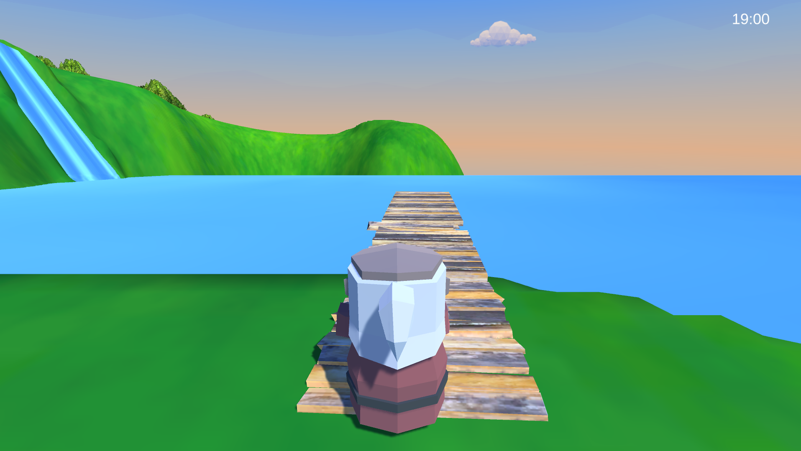
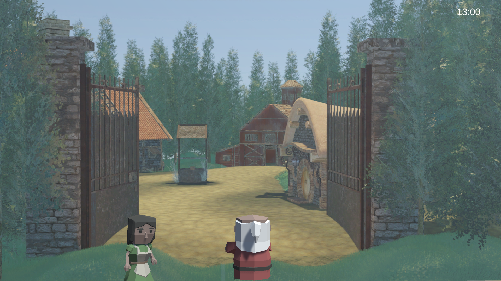

Lost Time
A game demo about understanding community
Overview
You are a merchant's assistant that wants to find a better trading path through a small back country town. As you pass by, you meet many kind and interesting people. As you spend your time in the country, you start to make new friends and discover what makes this community special.
Lost Time explores themes of connection and belonging through its narrative-driven gameplay, inviting players to slow down and appreciate the stories found in everyday encounters.
Screenshots




My Contributions
- Designed and implemented core narrative systems
- Created dialogue and character interaction mechanics